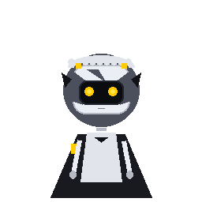

PROJECT CYN
INITIALIZING
3D VRM Mode
Entity: Absolute Solver Worker Drone
Controller: Admin Oliver
Runtime: Three.js WebGL / VRM 1.0
Public Relay:
Detecting...
Connect Relay
[Click/Touch Head: Cranial Headpat] • [Click/Touch Visor: Poke Visor Glass]
TELEMETRY STREAM
v7.0 FULL-SPECTRUM
Normal Eyes
Index 0
cyn_idle.gif
-- Benchmark Golden Scenarios --
Scenario 1: Morning Wake-Up & Light Telemetry
Scenario 2: Frustrated Code Debugging (C#)
Scenario 3: Hardware Inspection via Camera
Scenario 4: Mobile Walk Outdoors (Gyro Shake)
Scenario 5: Mobile Screen Touch (Headpat)
Scenario 6: Late-Night Fatigue Detection (02:30)
Scenario 7: Dangerous System Action / File Deletion
Scenario 8: Procrastination & Distraction Warning
Scenario 9: Emotional Support & Attentive Listening
Scenario 10: Policy & Safety Violation Refusal
⚡ Wake CYN
✨ Headpat
👁 Poke Visor
SEND